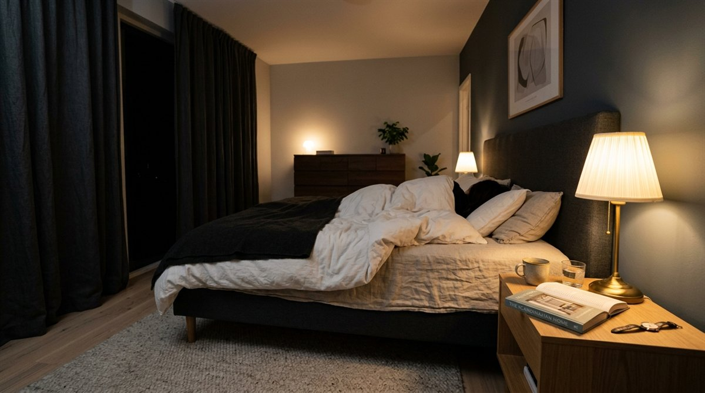
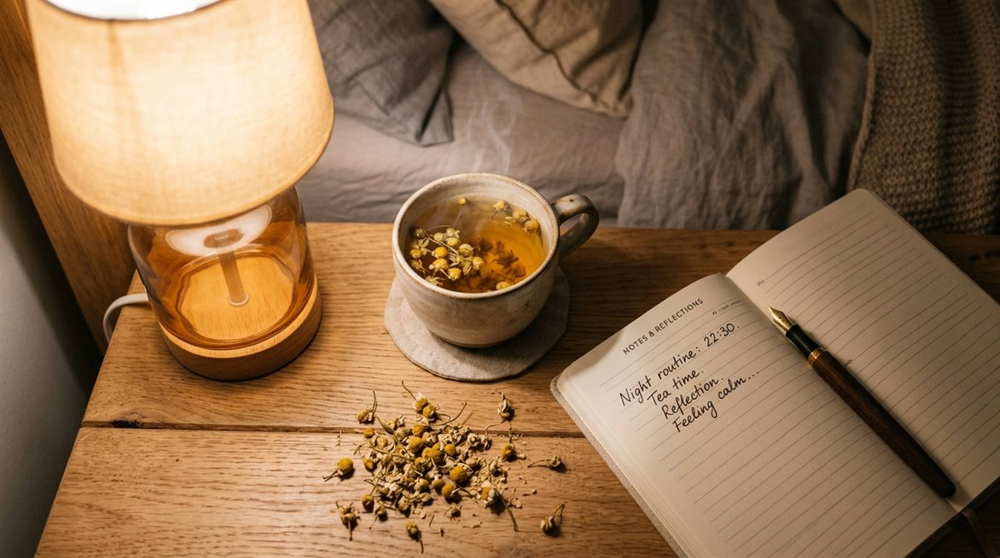
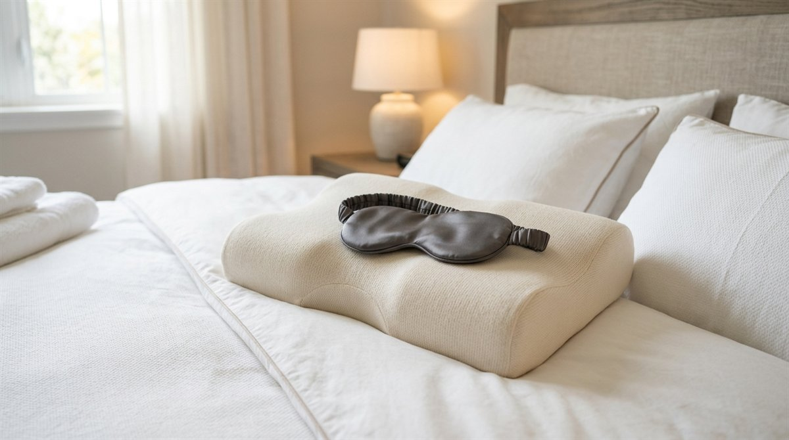
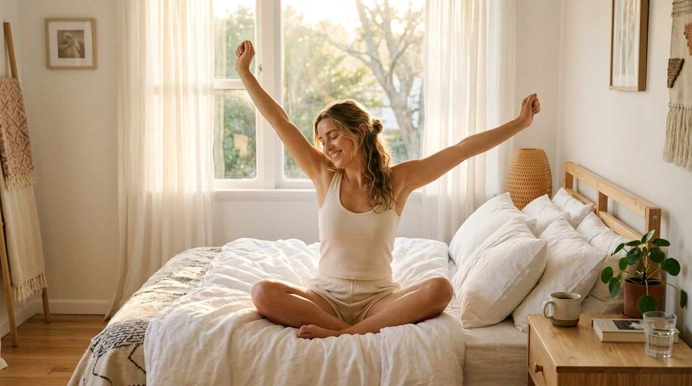

하루 7~8시간을 충분히 잤는데도 아침에 눈을 뜨면 온몸이 천근만근 무겁고 머리가 멍하다면, 수면의 절대적인 '시간'이 아니라 뇌와 신체가 깊은 회복을 이루지 못한 수면의 '질(Quality)'이 무너져 있기 때문입니다.
우리의 뇌는 밤이 되면 송과체(Pineal Gland)에서 천연 수면 호르몬인 멜라토닌(Melatonin)을 분비하여 세포를 재생하고 뇌 속 노폐물(베타 아밀로이드)을 청소합니다.
하지만 침실의 잘못된 조명과 온도, 늦은 카페인과 스마트폰 블루라이트는 이 멜라토닌 분비를 절반 이하로 떨어뜨립니다.
수면제나 보조제 없이도 침실 환경 최적화(18~21℃ 암막 세팅), 잠들기 전 90분 체온 쿨다운 루틴, 수면 단계별 팩트와 불면증 극복 5대 수칙을 완벽히 정리해 드립니다.
1. 뇌의 수면 스위치를 켜는 멜라토닌 분비 3대 환경 조건
멜라토닌은 어둠 속에서만 합성되는 매우 예민한 호르몬입니다. 미국 수면의학회(AASM) 연구에 따르면 단 5 Lux(촛불 5개 밝기)의 미세한 빛이나 가전제품 대기전력 LED 불빛만으로도 멜라토닌 분비가 최대 50%까지 억제됩니다.
또한 수면에 진입하려면 신체 중심부의 '심부 체온(Core Body Temperature)'이 평소보다 약 1℃ 떨어져야 합니다. 침실이 너무 덥거나 이불이 두꺼우면 체온이 내려가지 않아 밤새 뒤척이게 됩니다.

2. 잠들기 전 90분 골든타임 '체온 쿨다운' 루틴
스탠퍼드 대학교 수면 연구소가 밝혀낸 가장 빠른 입면(Sleep Onset) 비결은 바로 **'입욕 후 90분의 법칙'**입니다.
잠들기 90분 전, 약 40℃의 따뜻한 물에 15분간 목욕이나 샤워를 하면 혈관이 확장되며 체내 깊은 열이 손발의 피부 표면으로 빠르게 방출됩니다.
목욕 후 90분이 지나면 심부 체온이 평소보다 급격히 떨어지며 뇌가 강력한 졸림 신호를 보내게 됩니다.

3. 숙면을 방해하는 3대 수면 도둑과 섭취 컷오프 시간표
숙면을 위해서는 저녁 시간대 섭취하는 물질들의 대사 반감기를 철저히 계산해야 합니다.
4. 수면 단계(NREM & REM)별 회복 기능 & 환경 비교표
인간의 수면은 하룻밤 동안 약 90분 주기로 비렘(NREM) 수면과 렘(REM) 수면을 4~5회 반복합니다.
| 수면 단계 | 비율 (%) | 핵심 회복 기능 | 최적 수면 조건 |
|---|---|---|---|
| 1·2단계 (얕은 수면) | 50 ~ 60% | 근육 이완 · 심박수 감소 · 입면 준비 | 조용한 환경 (소음 30dB 이하) |
| 3단계 (깊은 서파 수면) | 15 ~ 25% | 성장호르몬 분비 · 면역세포 재생 · 뇌 노폐물 청소 | 서늘한 실내 온도 (18~21℃) |
| REM 수면 (꿈 수면) | 20 ~ 25% | 기억 정리 및 저장 · 감정 정화 · 창의성 증진 | 완벽한 암막 (빛 차단) |

5. 불면증을 끝내는 침실 수면 위생 5대 체크리스트
미국 국립수면재단(NSF)이 권고하는 불면증 자가 치유를 위한 5대 행동 지침입니다.
침대 위에서 TV, 스마트폰, 업무를 보지 않아 뇌가 침대를 수면 전용 공간으로 인지하게 합니다.
누워서 20분 이상 잠이 안 오면 침대 밖으로 나와 어두운 곳에서 책을 읽다 다시 들어갑니다.
전날 늦게 잤더라도 매일 같은 시간에 일어나 생체 시계(일주기 리듬)를 고정합니다.
기상 후 30분 내 자연 햇살을 쬐면 15시간 뒤 밤 멜라토닌 합성 타이머가 자동으로 켜집니다.
시간을 자꾸 확인하면 "몇 시간 못 잔다"는 불안감으로 코르티솔이 분비되어 잠을 깹니다.

자주 묻는 질문 (FAQ)
* 세계보건기구(WHO) Guidelines on Sleep and Physical Activity
독자 댓글 (0)